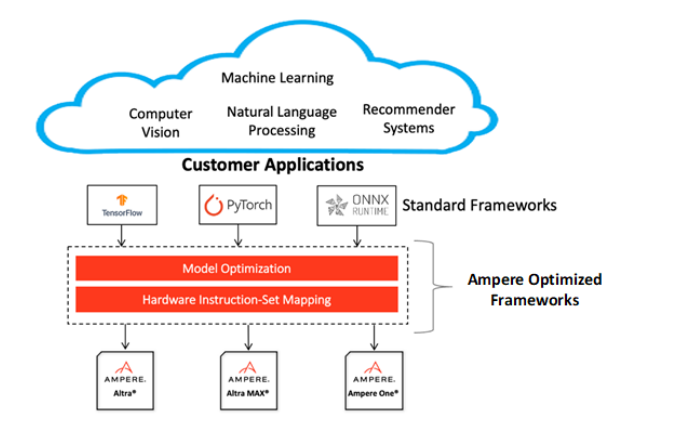

TensorFlow AI Framework Optimized for AMPERE® PrerequisitesPlease make sure to instal Docker OverviewAmpere Optimized TensorFlow inference acceleration engine is fully integrated with the TensorFlow framework. TensorFlow models and software written with the TensorFlow API can run as-is, without modifications. TensorFlow FrameworkPython is installed with Ampere Optimized TensorFlow and all dependencies. No additional installation steps are needed. Versions CompatibilityThis release is based on TensorFlow 2.11.0. Refer to TensorFlow version compatibility documentation, found at https://www.tensorflow.org/guide/versions, to check the compatibility of models built with older versions of TensorFlow. PythonTensorFlow 2.11.0 is built for Python 3.10, supporting Ubuntu 22.04. Regarding other Python versions, contact your Ampere sales representative. If you are using the software through a third party, contact their customer support team for help. You can also contact the Ampere AI team at ai-support@amperecomputing.com. ConfigurationsAmpere Optimized TensorFlow inference engine can be configured by a set of environment variables for performance and debugging purposes. They can be set in the command line when running TensorFlow models (e.g., AIO_NUM_THREADS=16 python run_tf_resnet50.py) or set in the shell initialization script. AIO_PROCESS_MODE This variable controls if Ampere Optimized TensorFlow inference engine is used in running the TensorFlow model.• 0: disabled• 1: enabled (Default) AIO_CPU_BIND Enables core binding. If enabled, each Ampere Optimized TensorFlow thread will bind itself to a single core.• 0: Core binding disabled• 1: Core binding enabled (Default) AIO_MEM_BIND Bind memory to NUMA (Non-uniform memory access) node 0. For optimal performance, numactl (https://linux.die.net/man/8/numactl) is preferred. numactl bind will affect both the Tensorflow framework and the optimized framework buffers, while the optimized framework is unable to affect buffers allocated by the TensorFlow framework.• 0: Membind disabled• 1: Membind to node 0 (Default) AIO_NUMA_CPUS Select cores that Ampere Optimized TensorFlow should bind to (if CPU_BIND is enabled).• Not set: use the first N cores of the machine, excluding hyper-threaded machines (Default)• Set: try to use N first cores from the list of cores for N threads. The list is in space-separated, 0-based number format. For example selecting cores 0 to 1: AIO_NUMA_CPUS=”0 1” AIO_DEBUG_MODE Control verbosity of debug messages.• 0: No messages• 1: Errors only• 2: Basic information, warnings, and errors (Default)• 3: Most messages• 4: All messages QuickstartThe following instructions run on Altra/Altra Max Linux machines installed with Docker. When you are already using a virtual machine pre-installed with the version of Ampere Optimized Tensorflow (e.g. on a cloud service provider) that you need, you can skip the following step of launching Docker container. Note: This docker image is developed for benchmarking and evaluation purpose, not for deployment into production environment. We will provide required Debian, RPM and Python packages as needed for your production deployment. Launching Docker ContainerPulling Docker Image from Docker Hub repository.$ docker pull amperecomputingai/tensorflow:1.6.0 Launching Docker Container$ docker run --privileged=true --rm --name tf-aio --network host -it amperecomputingai/tensorflow:1.6.0 Warning: This user has, by default, root privileges with Docker. Please limit permission according to your securitypolicy. Running ExamplesYou can try Ampere Optimized TensorFlow by either running the Jupyter Notebook examples or Python scripts on the CLI level. To run the Jupyter Notebook QuickStart examples follow the instructions below: Set AIO_NUM_THREADS to the requested value first.$ export AIO_NUM_THREADS=16; export OMP_NUM_THREADS=16$ cd /workspace/aio-examples/$ bash download_models.sh$ bash start_notebook.sh If you run the Jupyter Notebook QuickStart on a cloud instance, make sure your machine has port 8080 open and on your local device run:$ ssh -N -L 8080:localhost:8080 -I <ssh_key> your_user@xxx.xxx.xxx.xxx Use a browser to point to the URL printed out by the Jupyter Notebook launcher. You will find the Jupyter Notebook examples (examples.ipynb) under the /classification and /object detection folders. The examples run through several inference models, visualize results they produce and present the performance numbers. To use CLI-level scripts:Set AIO_NUM_THREADS to the requested value first$ export AIO_NUM_THREADS=16; export OMP_NUM_THREADS=16$ cd /workspace/aio-examples/$ bash download_models.sh Go to the directory of choice, e.g.$ cd classification/resnet_50_v15 Evaluate the model.$ python3 run.py -m resnet_50_v15_tf_fp32.pb -p fp32$ python3 run.py -m resnet_50_v15_tflite_int8.tflite -p int8 Ampere Optimized Frameworks Programming GuideAmpere Optimized TensorFlow is powered by Ampere® AI backend which accelerates Deep Learning (DL) operations on the Ampere® Altra family of processors. Ampere Optimized Frameworks accelerate DL operations through model optimization, highly vectorized compute kernels and multi-thread operations that are automatically tuned to deliver the best latency and throughput on Ampere Altra processors. It delivers 2-5x gains over alternative backend solutions.  Supported Inference OpsAmpere Optimized Tensorflow accelerates most common Tensorflow ops that are used in various types of models. Here is a list of accelerated ops and formats (Note: non-accelerated ops will still run without a problem, at the original framework operator speed): FP32 FP16 (Explicitly defined in model) Implicit FP16 (Automatic on-the-fly conversion) Remarks Conv2D Y Y Y Conv3D Y N NDHWC only _FusedConv2D Y Y FusedBatchNorm Y N NHWC only FusedBatchNormV2 Y N FusedBatchNormV3 Y N MaxPool Y Y NHWC only 2D Max Pooling only AvgPool Y Y NHWC only 2D Average Pooling only MatMul Y Y Y transpose_a == 0 only _FusedMatMul Y Y Y transpose_a == 0 only BatchMatMul Y Y Y adj_x == 0 only BatchMatMulV2 Y Y Y adj_x == 0 only Mean Y Y Mul Y Y Add Y Y AddV2 Y Y BiasAdd Y Y Sub Y Y Pow Y Y Div Y Y RealDiv Y Y Tanh Y Y Sqrt Y Y Square Y Y Rsqrt Y Y SquaredDifference Y Y Relu Y Y Y Relu6 Y Y LeakyRelu Y Y Softmax Y Y AddN Y Y Pad Y Y Concat Y Y axis_constant only ConcatV2 Y Y axis constant only Gather Y N indices int32 only axis constant only GatherV2 Y N indices int32 only axis constant only batch_dim = 0 only GatherND Y N Y Indices int32 and int64 supported Batch_dim = 0 only StridedSlice Y N index int32 only begin_mask and end_mask only Slice Y Y Squeeze Y Y DepthwiseConv2dNative Y Y Reshape Y Y ExpandDims Y Y Transpose Y Y perm constant only Erf Y Y SplitV Y Y axis constant only Conv3dBackpropInputV2 Y N NDHWC only Ampere AI continues to expand the coverage of TensorFlow ops. If your model has any op that is not listed in the table or custom ops that need acceleration, please contactai-support@amperecomputing.com Ampere Optimized TensorFlow also supports acceleration of TensorFlow Lite int8 models. Please contact us for information about TensorFlow Lite model support TensorFlow Eager Execution and Graph ExecutionWhile TensorFlow Eager Execution provides excellent model building, programming, and debugging experience, it is slower than graph execution. So, graph execution is typically used for inference deployment. In current version Ampere Optimized TensorFlow only accelerates Graph Execution mode. After building your model in Eager mode, you can use tf.function() to compile you eager function into callable graph. More details can be found in TensorFlow documentation at: https://www.tensorflow.org/api_docs/python/tf/function. Ampere model library also provides some sample code in how to run eager model efficiently, access AML at:https://github.com/AmpereComputingAI/ampere_model_library/blob/main/natural_language_processing/extractive_question_answering/electra_large/run.py. ThreadingAmpere Optimized TensorFlow controls the number of intra_op threads of Ampere Optimized Tensofrlow with tensorflow.config.threading.set_intra_op_parallelism_threads() (Or in the case of TF v1 session, set config.intra_op_parallelism_threads). This controls both the number of threads used for ops delegated to Ampere Optimized Tensorflow as well as the ops running on default CPU backend. Some default CPU backend ops (non-AIO) also need to set OMP_NUM_THREADS environment variable to control the intra_op threads.To correctly switch between Ampere Optimized Tensorflow and Tensorflow thread pools we recommend setting following environmental variables to ensure best performance:OMP_WAIT_POLICY=ACTIVE GOMP_SPINCOUNT=10000 KMP_BLOCKTIME=1 Programming TipsIn the first inference pass, Ampere Optimized Tensorflow performs runtime compilation of TF graphs. So, the latency of the first pass is expected to be longer. Subsequent passes will be accelerated. Frozen TF models will provide slightly better performance. Please see TF documentations in how to generate frozen graphs. Ampere Optimized TensorFlow provides much better latency scaling as core count increase, comparing to other platforms. You can easily try the optimal number of cores with the above intra_op_parallelism_threads configurations that can give you the best performance/$, while meeting your latency requirements. (Experimental): Ampere Optimized TensorFlow backend now provides automatic FP16 operator conversion that can boost the performance of your FP32 model on-the-fly. It automatically performs FP16 conversion and computation for certain whitelisted operators through regular expression. To take advantage of that, you can set environment variable.$export AIO_IMPLICIT_FP16_TRANSFORM_FILTER=”.*” This activates automatic FP16 conversion for all supported operators. It is estimated that this has very little impact to accuracy of common models. Please contact us if you have any question about this feature. If any issues occur, Ampere AI team is ready to help. Typically, the first step is to get more debug logs and send it to ai-support@amperecomputing.com Please set environment variable AIO_DEBUG_MODE=5 to capture low level logs. We can also provide more in-depth profiling of your model to help enhancing performance to meet your needs.